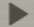

Spatio-temporal patterns can be generated to create stimulation patterns.

Preview for Stimulus Area
Note
You can build stimuli for region-based and surface-based simulations
Edit Stimulus Equations page
In this page we can define a stimulus temporal profile for each node independently.
On the left column, you will find configurable fields that will allow you to:
- load a preexisting Region Stimulus entity,
- enter the name for a new entity and
- select the associated Connectivity matrix that will be used to create a stimulus pattern.
Additionally, you can:
- select the Temporal Equation that defines the profile and
- modify its parameters.
From the action bar in the right side you have access to:
Set Region Scaling page where you can:
- select the nodes to which the temporal stimulus will be applied and
- set the scaling value (stimulus strength) for those nodes.

Preview for node selection in Stimulus at a region level
Click on Save New Stimulus Region button to create the new stimulus entity.
Edit Stimulus Equations
In the case of a surface level stimulus, besides the temporal profile, you can define the spatial profile of your pattern.

Preview for Stimulus Surface edits
On the left column:
- choose a preexisting Surface Stimulus or
- enter the name for a new entity and :
- select the associated Surface datatype.
- select the Spatial Equation that describes the spatial spread of the stimulus and
- set its parameters.
From the action bar in the right side you have access to:
View Stimulus Progress page where you are able to:
- select the spatial focal points:
- click on the surface, a blue pin will point to the selected point;
- click on Add Focal Point button to select this vertex, an orange arrow will mark the added point;
- repeat for each focal point.
Preview for selecting the focal points
On the right column you will have the list of the selected focal points. You can delete them independently.
Hint
The spatial pattern will be centered around the focal points.
Finally, after clicking on Save New Stimulus Surface button to create the new stimulus entity, you can visualize the evolution of the spatiotemporal pattern.
Click on the  button to launch the animation.

Preview of a spatiotemporal stimulus animation
Tip
You can increase the complexity of a stimulus pattern by building on top of one Stimulus entity.
For an example on how to do it, please read the Test Cases in the User Guide document.